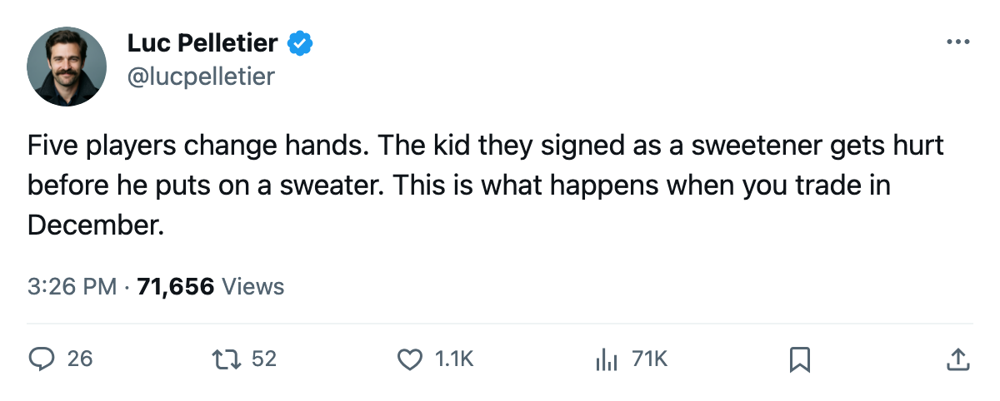

Roster Move Roundup: Colorado Sent Morris to Nashville, and the Predators' Newest Defenseman Is Already Hurt
The confirmed trade between the Avalanche and the Predators netted Colorado veteran depth and netted Nashville a young defenseman who went on the injured list within days of signing
 Luc PelletierMontreal correspondent · Home Ice Network
Luc PelletierMontreal correspondent · Home Ice Network
 Colorado Avalanche sent Derek Morris and Brett Clark to
Colorado Avalanche sent Derek Morris and Brett Clark to  Nashville Predators for Rem Murray, Sandis Ozolinsh, and Andreas Johansson, the league confirmed on December 2. It is a five-player trade with a draft pick attached, and both clubs are in the playoff picture: the Avalanche are seventh in the West at 29 points, the Predators third at 36.
Nashville Predators for Rem Murray, Sandis Ozolinsh, and Andreas Johansson, the league confirmed on December 2. It is a five-player trade with a draft pick attached, and both clubs are in the playoff picture: the Avalanche are seventh in the West at 29 points, the Predators third at 36.
Colorado needed defence. They have allowed 73 goals in 27 games, the worst differential in the Northwest.  Adam Foote80 has been on the injured list three separate times this season.
Adam Foote80 has been on the injured list three separate times this season.  Martin Skoula71 is out with a back until January 8. Morris gives them a defenseman who can take the minutes the younger pairings cannot.
Martin Skoula71 is out with a back until January 8. Morris gives them a defenseman who can take the minutes the younger pairings cannot.
Nashville got young bodies. Karel Hemsky77, signed by the Predators on December 3, went onto the injured list with an ankle three days later. The league has him out until January 15. He had not dressed for a single game.
The trade, by the numbers
The Avalanche got three forwards. Murray can play all four forward spots, which matters when  Alex Tanguay77 (head) and Skoula (back) are both on the shelf. Johansson fills the fourth centre role at a cost that keeps Colorado's books clear for what comes next.
Alex Tanguay77 (head) and Skoula (back) are both on the shelf. Johansson fills the fourth centre role at a cost that keeps Colorado's books clear for what comes next.
Nashville got a top-four defenseman in Morris and a puck-moving veteran in Clark, who can run the second pairing and kill a penalty. Both address the same hole: the Predators sit third in the Central at 36 points but have conceded 65 goals, and their blueline rotation has been thin all season with Mark Eaton72 recently scratched from the lineup.
The question for Nashville is whether Ozolinsh still moves like a first-pairing defenseman. He spent time on Carolina's injury ledger this season with a hand issue before Colorado picked him up, and Colorado moved him within days. The Predators are betting that new surroundings help him.
Hemsky, for now, watches from the press box. The ankle keeps him out until January 15, and the Predators have 19 injury spells on the season with 75 days lost. Nashville signed him as a defenseman for the future, and the only thing he's added so far is a line on a medical chart.
